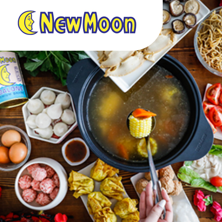

Food & nourishment
New Moon
Abalone, bird's nest, rice, sauces and more. A consumer brand managed and distributed by GJH.
Discover New MoonGoh Joo Hin Pte Ltd / Singapore
Discover a company working across food, electronics, health and nutrition — and the distinctive brands in its portfolio.
Explore our portfolio
Lifestyle photograph from GJH's official website.
01 / A portfolio of familiar names
Meet selected brands in GJH's portfolio. Each brings its own identity, products and story.

Food & nourishment
Abalone, bird's nest, rice, sauces and more. A consumer brand managed and distributed by GJH.
Discover New Moon
Pantry & ingredients
A range of canned vegetables, fruits, meats and seafood for everyday meal preparation.
Discover MILI
Drinks & frozen treats
Drinks and Potong ice cream, bringing refreshment to everyday occasions.
Discover GOGOOriginal brand photography from GJH's official website. Brands retain their own identities.
A closer look / New Moon
Discover selected abalone products listed on GJH's official eShop. Each has its own origin and packaging.
Shop the official collectionOriginal official eShop packshots. Packaging editions and availability may change; follow the product links for current details.
02 / Our businesses
GJH's business spans three areas, serving everyday needs through food, lifestyle and healthcare products.
Food and beverage products, from pantry essentials to New Moon's abalone and nourishment ranges.
Explore food brandsConsumer electronics and lifestyle products, with distribution relationships described on GJH's official brand pages.
Explore electronicsHealth and nutrition offerings, including the Borsch Med range of Traditional Chinese Medicine supplements.
Explore health brands03 / Working together
For brands and business partners, GJH describes a combination of sourcing, warehousing, distribution and customer service.
Start a business conversationA business working across food, electronics and health-related products.
A regional distribution system described in GJH's official company profile.
Working with suppliers and customers, with an emphasis on prompt, reliable service.
04 / Our story
GJH traces its beginnings to a provision store on Singapore's Rochor Road in the 1940s.
The Goh brothers began with a provision store supplying daily food essentials.
New Moon's own history dates its first abalone product to 1959.
GJH's timeline identifies MILI as its second house brand.
Borsch Med extends the portfolio into health supplements.
05 / Regional presence
GJH's company profile describes an Asia Pacific distributor network supported by warehousing and distribution capabilities.
Selected markets mentioned by GJH
Company-profile references; product availability and distribution terms vary by market.
Let's build the next connection
Discuss brand distribution, product enquiries or a potential partnership with GJH through its official contact channel.
Opens the official GJH website in a new tab.